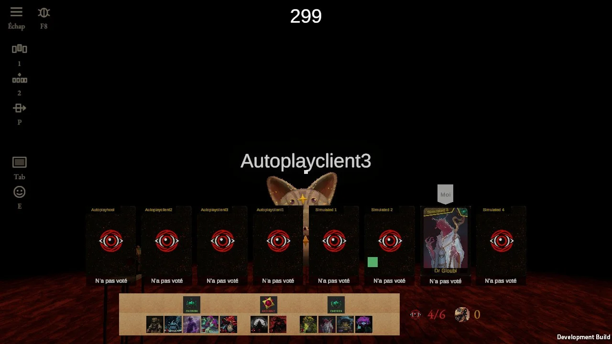
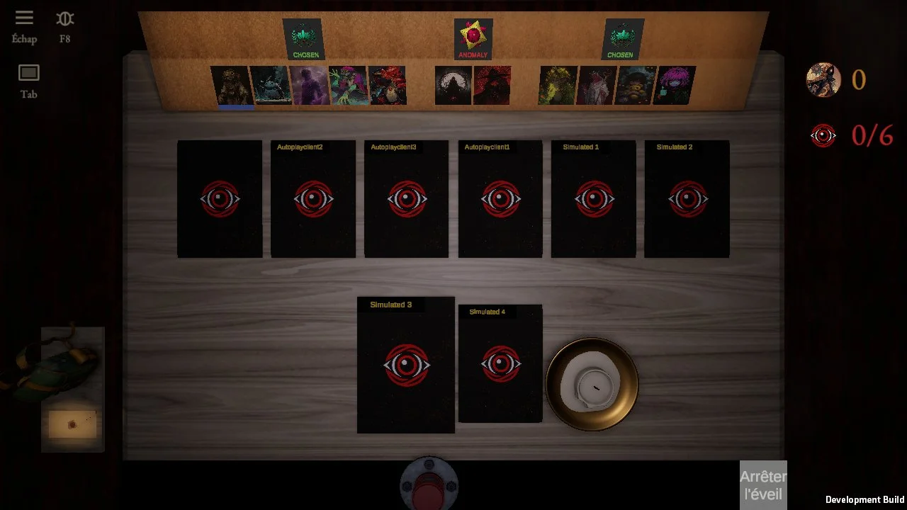

Codé depuis le tour 2 (L0 + D3) : le jour, la barre part à l'écran avec la texture du liège de la table, dans ses propres couleurs. Ton retour : « un rectangle clair au milieu de l'écran ». La nuit, le même liège est sombre et orangé parce que seule sa lampe l'éclaire, et ses bords se perdent dans l'ombre de la table.


La scène : la capture du vote du jour 1 de la partie autoplay de ce matin ; seul le liège est redessiné (la vraie texture du jeu, à son grain), les portraits et les logos sont ceux de la capture.
Sans question : tout se fait sur le fond du liège seul, les portraits restent nets ; un fondu se code avec des couleurs de sommets (le shader de la barre les lit), une teinte avec la couleur du fond.
Même moment, mêmes portraits ; seul le fond change.
La texture dans ses couleurs, bords nets.
Même liège, ses quatre bords s'effacent dans le noir : plus d'arête.
Le liège garde la couleur qu'il a sous sa lampe (sombre, orangé) ; bords nets.
F2 et F1 ensemble : sombre et sans arête.
Comme la nuit : un rond de lumière chaude au milieu, le liège s'éteint vers les bords.
Le liège garde ses couleurs mais devient un tableau : un cadre de bois sombre autour.